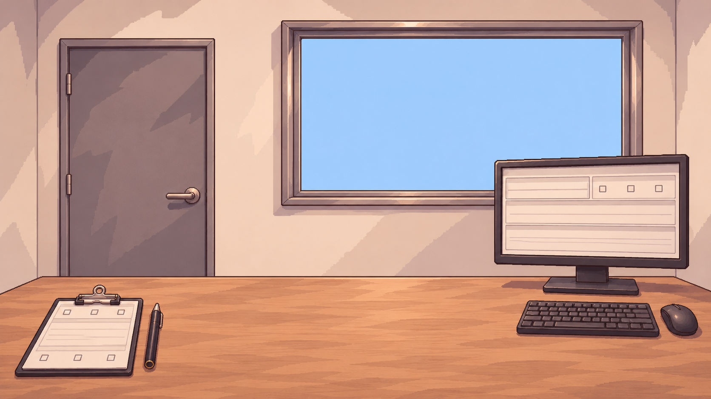

상담
커피톡
새 게임
불러오기
저장된 진행이 없습니다
설정
게임 종료
다음에 또 만나요.
메뉴로 돌아가기
설정
그래픽
화면 모드
창 모드
전체 화면
해상도
1280 × 720
1920 × 1080
그래픽 품질
낮음
보통
높음
오디오
전체
80%
BGM
65%
효과음
70%
설정을 저장하지 못했습니다. 다시 시도해 주세요.
새 게임
새 게임은 상담실에서 시작됩니다.
게임 종료
게임을 종료하시겠습니까?